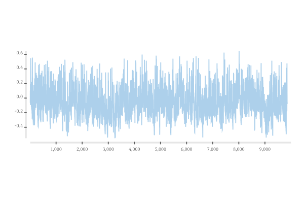
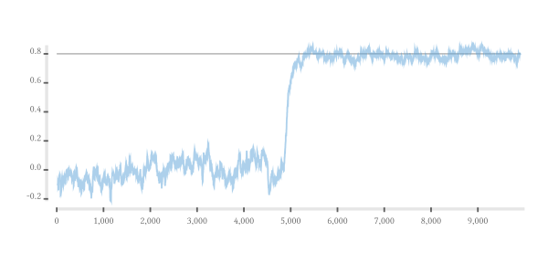

online-random

Random stream experiments
scratchpad

alpha
\[\begin{align}
\alpha & = \frac{\sum y \sum x^2 - \sum x \sum xy}{n\sum x^2 - (\sum x)^2} \\
& = \frac{n^2 \bar{y} \overline{x^2} - n^2 \bar{x} \overline{xy}}{n^2 \overline{x^2} - n^2 \bar{x}^2} \\
& = \frac{\bar{y} \overline{x^2} - \bar{x} \overline{xy}}{\overline{x^2} - \bar{x}^2} \\
\end{align}\]

beta
\[\begin{align}
\beta & = \frac{n\sum xy - \sum x \sum y}{n\sum x^2 - (\sum x)^2} \\
& = \frac{n^2 \overline{xy} - n^2 \bar{x} \bar{y}}{n^2 \overline{x^2} - n^2 \bar{x}^2} \\
& = \frac{\overline{xy} - \bar{x} \bar{y}}{\overline{x^2} - \bar{x}^2} \\
\end{align}\]

correlation jumping mid-stream

auto-correlation

Dependencies across moments
\[\begin{align}
x_{t+1} & = (alpha_t^x + beta_t^{x->x} * ma_t^x + beta_t^{s->x} * std_t^x) + s_{t+1}\\
s_{t+1} & = (alpha_t^s + beta_t^{x->s} * ma_t^x + beta_t^{s->s} * std_t^x) * N(0,1)
\end{align}\]
Other Steaming Examples
- https://github.com/ElvishJerricco/kleisli-functors/blob/d0bde122c1d0c988b16d3737bba712931b25c963/src/Control/Kleisli/Functor.hs
- https://github.com/jwiegley/notes/blob/f15aa380ddf98bc387b24a66171a62b38f236079/haskell/Teletype.hs
- https://github.com/ejconlon/freeing/blob/422748981e5fc76a4aa3bf1d25eca479e4c54085/src/Freeing.hs
- https://github.com/Tr1p0d/code-snippets/blob/2403ae3e97c3b4f8e27fcd5cb96b432c4f4ea0e4/ea/src/GeneticPipeline/GeneticPipeline.hs
Regression
https://en.wikipedia.org/wiki/Regression_analysis https://en.wikipedia.org/wiki/Linear_least_squares_(mathematics) https://stats.stackexchange.com/questions/81740/recursive-online-regularised-least-squares-algorithm
Online ML
https://en.wikipedia.org/wiki/Online_machine_learning
\[\Gamma _{i}=\Gamma _{i-1}-{\frac {\Gamma _{i-1}x_{i}x_{i}^{T}\Gamma _{i-1}}{1+x_{i}^{T}\Gamma _{i-1}x_{i}}}\]
\[w_{i}=w_{i-1}-\Gamma _{i}x_{i}(x_{i}^{T}w_{i-1}-y_{i})\]
https://stats.stackexchange.com/questions/81740/recursive-online-regularised-least-squares-algorithm https://stats.stackexchange.com/questions/6920/efficient-online-linear-regression
skewness
https://stats.stackexchange.com/questions/6874/exponential-weighted-moving-skewness-kurtosis https://stats.stackexchange.com/questions/234460/online-calculation-of-exponential-moving-skewness-in-r-code
autocorrelation
https://en.wikipedia.org/wiki/Recursive_least_squares_filter
workflow
stack build --test --exec "$(stack path --local-install-root)/bin/orand" --exec "$(stack path --local-bin)/pandoc -f markdown -i other/header.md readme.md other/footer.md -t html -o index.html --filter pandoc-include --mathjax" --file-watch